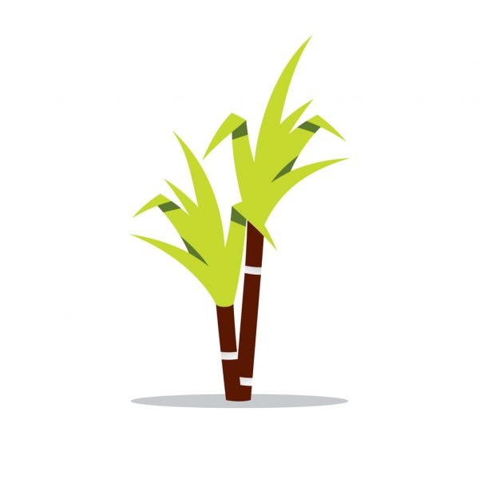

<ion-header>
  <ion-toolbar color="success">
    <ion-buttons slot="start">
      <ion-menu-button auto-hide="false" side="end"></ion-menu-button>
    </ion-buttons>

    <ion-title>Início</ion-title>

  </ion-toolbar>
</ion-header>

<ion-content class="content">

  <ion-refresher slot="fixed" (ionRefresh)="doRefresh($event)">
    <ion-refresher-content pullingIcon="chevron-down-circle-outline" pullingText="Solte para recarregar"
      refreshingSpinner="circles" refreshingText="Carregando...">
    </ion-refresher-content>
  </ion-refresher>

  <ion-card *ngFor="let reg of registrosSalvos" class="block">

    <ion-item class="block">
      <ion-avatar slot="start">
        
      </ion-avatar>
      <ion-label>
        <h3 class="block">{{reg.nome}}</h3>
      </ion-label>
    </ion-item>

    <ion-slides pager="true" [options]="slideOptsOne" #slideWithNav class="block">
      <ion-slide *ngFor="let s of sliderOne.slidesItems" class="block">
        
        <span class="slide-text">imagem {{s.id}}</span>
      </ion-slide>
    </ion-slides>

    <ion-card-header>
      <ion-card-title><strong>Nova praga detectada!</strong></ion-card-title>
    </ion-card-header>
    <ion-card-content>
      estamos em constante estudo para trazer a melhor informação sobre esta praga
    </ion-card-content>


    <ion-input [hidden]='true' [(ngModel)]="latitude">{{reg.latitude}}</ion-input>
    <ion-input [hidden]='true' [(ngModel)]="longitude">{{reg.longitude}}</ion-input>

    <ion-footer>

      <ion-grid>
        <ion-row>
          <ion-col>
            <ion-button
              (click)="regDetail(reg.nome, reg.pragaid, reg.id, reg.fazenda,reg.talhao, reg.setor, reg.observacao,reg.variedade)"
              color='success' expand="block">
              Detalhes
            </ion-button>
          </ion-col>
          <ion-col>
            <ion-button color='success' expand="block" (click)="positionDetail(reg.latitude, reg.longitude)">
              Local
            </ion-button>
          </ion-col>
        </ion-row>

      </ion-grid>
    </ion-footer>
  </ion-card>

  <!--
  <ion-list *ngFor="let reg of registrosSalvos">
    <ion-item>
      <ion-avatar slot="start">
        
      </ion-avatar>
      
      <ion-label >
        <h2>{{reg.nome}}</h2>
      </ion-label>
      <p > {{reg.observacao}} <br> <ion-badge color="primary">Cultura</ion-badge></p>

      <ion-icon name="ellipsis-vertical-outline" size="large"></ion-icon>
      
    </ion-item>
  </ion-list>
-->

  <ion-fab vertical="bottom" horizontal="end" slot="fixed">
    <ion-fab-button routerLink="/tabs/tab3" color="success">
      <ion-icon name="add"></ion-icon>
    </ion-fab-button>
  </ion-fab>

</ion-content>